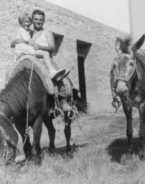
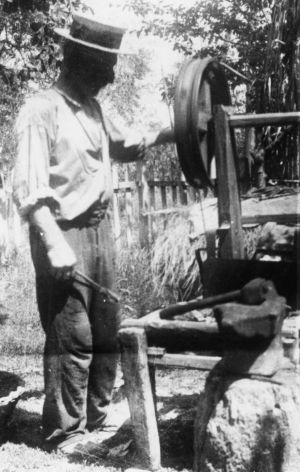
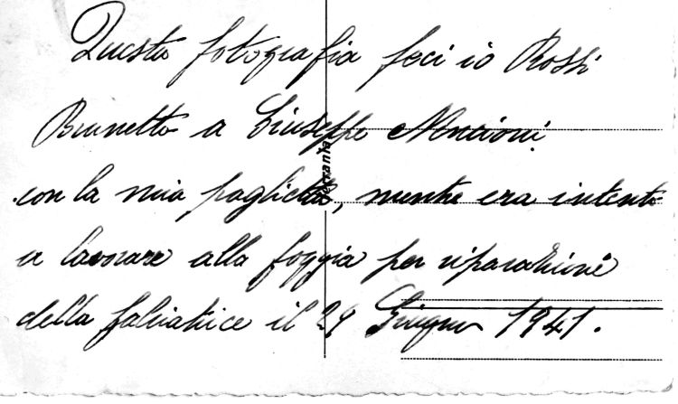

Quercegrossa (Ricordi e memorie)
CAPITOLO IX - Mezzadria
Vai all'Indice dei Capitoli
Vai all'Indice Mezzadria
Lavori extra
Quando si presentava l'occasione, il contadino non esitava a rendersi disponibile per qualche opera che il fattore gli chiedeva oltre ai normali obblighi di corvée. Tutto ciò gli consentiva di guadagnare qualche lira specialmente nella stagione invernale, quando i maggiori lavori agricoli erano fermi. Per lo più si richiedeva di lavorare al bosco, fare fosse, piantare viti, trasportare robe o prodotti e riparare strade. Tutti lavori che di solito effettuava insieme ai salariati. Il guadagno variava se c'era o meno l'uso dei bovi. Non erano molte però le opportunità offerte al contadino nelle fattorie e capitava che si trovasse un lavoro stagionale da se stesso come andare dietro le macchine della tribbiatura con i Mori o i Buti e altri lavori. In tempi più lontani gli extra dovevano essere tassativamente autorizzati dal padrone. Capitava anche che la fattoria avesse un contratto fisso di fornitura a qualche azienda della città, come era per il Bindi con una lavanderia, come vedremo ampiamente più avanti, e in questi casi i coloni vi provvedevano dietro compenso.
Il patto colonico del 1921 affronta in modo esauriente questo problema e ne precisa i termini nell'art. 21: "Il colono è obbligato a prestare l'opera sua e quella delle persone di sua famiglia anche con il bestiame, ogni qualvolta ne venga richiesto dal proprietario, nei giorni però che non arrechi danno alla normale lavorazione del podere. Le opere a braccia verranno retribuite nella stessa misura che agli operai braccianti fissi, tenendo per base i prezzi della mano d'opera di campagna attuale. Le opere con i buoi verranno aumentate del 50 per cento sulle opere a braccia; dette opere verranno pagate mensilmente a contanti”.
Giulio Carli: "Due volte la settimana andavo a Siena alla lavanderia a portare un carico di legna, siamo nel 1940/41, e poi ogni 15 giorni un viaggio dal Pallini alla Costarella carico di catasta da 20 q. Il Torsoli comprava un pezzo di bosco da tagliare, in quello del Pallini, e poi s’accordavano per rifornire la lavanderia col legno accatastato. Se andavo il lunedì, la domenica sera passavo il tempo a portar legna a casa. Ci volevano anche due/tre viaggi perchè non si poteva fare il carico grande nel bosco con tutti gli
ostacoli che c’erano.

Poi a casa si faceva il carico di 20 q; un viaggio il martedì e l'altro il giovedì/venerdì di solito; tutto questo fino alla guerra. Raggiungevo il Palazzo Diavoli, facevo marcia indietro e scaricavo senza staccare i buoi; scioglievo le funi e il carico cascava; alle otto avevo già finito. Quando invece andavo alla Costarella partivo alle tre di notte perché, per regolamento, all'otto dovevo essere col carro fuori di porta Camollia. Ero giovane, avevo tredici anni. Mi attaccavano il giogo, poi il mi' babbo mi accompagnava fino alla fine della discesa delle Redi per tirare la martinicca. Andavo anche a Pievasciata dove caricavo 400/450 fastella. Nella salita del Colombaione, a Vagliagli, mettevo la corda sulle corna dei bovi e montavo sul tiro del carro perchè non si alzasse e loro tornavano da soli, senza bisogno di guidarli. Anche quando andavo a Siena tornavo e dormivo. Il viaggio a Siena a portare la legna era pagato dal padrone. Da Petroio a Siena impiegavo 1 ora e mezzo con bovi maremmani di 20 q, e come viaggiavano. Una volta i miei vendono due bovi e un vitello che dovevano mandare a Ravenna. Il responsabile, alla stazione ferroviaria, li tasta alla grasciola: la chiappò con una mano e sentì quanto erano grassi. Non li volle. Ci toccò riportarli a Petroio. Il vitello, che era di 3 q, ci mise tre giorni a tornare a casa; da quanto era grasso non camminava, mentre i bovi erano di 22 q”.
Nella foto: Adamo Pagliantini e la nipote Paola con i muli ingaggiati dal Bindi per la smacchiatura dei suoi boschi.
In altra circostanza Giulio trova il sistema di guadagnare due soldi, ma …
"Quando morì il Sarrocchi (1950) c'era il Massetano a buttare giù il bosco di Passeggeri. Io e il mio fratello Dino non s'aveva mai avuto l'orologio. Allora rifacevano il palazzo a Petroio e ci andava il Ferrozzi Armando delle Redi a cavare la rena nella Mandria bassa. C'era un grande monte di rena da portare. "Ha detto il padrone se si porta la rena", dice lo zio Gigi. A me interessavano i soldi e feci 14 viaggi in qualche giorno. Ma se di giorno portavo la rena, la notte zitto, zitto, partivo con i bovi. Per non farmi vedere dagli altri contadini, i buoi erano a mezzo col padrone, li aggiogavo alle Racole, e poi via verso i boschi della Torre e Passeggeri a caricare traverse. Legate con un canapo e l'aiuto dei bovi, le caricavo sul carro. Facevo 3/4 viaggi a notte e le portavo a Bellavista. Nei primi viaggi, mentre andavo a Passeggeri a smacchiare le cataste, venne il Massetano e mi mise 5000 lire sul carro, e quando raddoppiarono ci si comprarono due begli orologi. Quando, però, lo zio Gigi andò a fare i conti della rena, e disse al Pallini che doveva pagare la rena a Giulio che aveva fatto 15/16 viaggi col carro, si senti rispondere: "Il su' nipote l'ha già riscossa la rena". Avevano fatto la spia e non riscossi mai i viaggi fatti. "C'erano più spie che cappelli", e avevano riportato al padrone del mio lavoro notturno con i bovi, fatto senza permesso”.
- “Il contadino d'inverno, per qualche lira aiutava a tagliare il bosco, doveva poi fare le fastella per il forno, lavorare in cantina, riparare carri e altri attrezzi, fare i pali per le viti, per i carri, tagliare i salci”.
- “Giuseppe Nencioni faceva i coltri, vomeri di legno, gioghi per i bovi, ceste, paniere zoccoli per tutta la famiglia e per gli altri”.

Il colono Giuseppe Nencioni all’Arginano, mentre lavora alla forgia, ripreso nel 1941 da Brunetto Rossi che aggiunse una memoria sul retro della foto.

Registri Passeggeri
In una fattoria modello come quella di Passeggeri dove da decenni fervevano lavori di miglioramento agli edifici e alle strade, si offrivano ai coloni molte occasioni di lavoro extra che venivano puntualmente registrati dal fattore. Oggi li possiamo consultare e farci un'idea più precisa di come era organizzato l'impiego dei coloni, tenendo presente che siamo in tempo di guerra e molti uomini sono assenti, sostituiti da vecchi, donne, ragazzi e garzoni. Dell'anno 1943 è stato ritrovata la documentazione completa e vediamo che il Senatore distribuisce incarichi a tutti i suoi 11 contadini con una trentina di opre a contadino e un relativo guadagno medio di lire 500 annue, ma con marcate differenze tra le 853 lire del Bencini di Passeggeri e le 381 del Florindi di Castagnoli. I lavori sono distribuiti su tutti i mesi e solo due contadini non completano l'anno. Si prevedono tre tipi di opere: "a braccia", "con bovi" e "viaggi". Quella con bovi rappresenta la totalità del lavoro ed era retribuita con 18,60 lire. Le opere (s’intende una intera giornata lavorativa) erano ripartite in due voci riguardanti il mantenimento del fondo con strade, muri di cinta, a retta, greppe, argini,direzione di acque ecc., e nuove costruzioni dove il fattore registrava gli scassi delle vigne. A queste si aggiungevano una quindicina di voci che interessavano i lavori delle colture del bosco, del frantoio, della fornace, porto di derrate ecc. Il periodo delle registrazioni parte dal 28 febbraio 1943 e va al 25 gennaio 1944. Entrando nello specifico dei lavori svolti ci troviamo di fronte a una consistente varietà di impegni considerati in prevalenza, mezza, una, e una e mezza opera con indirizzo stagionale: trasporto dell'acqua nei mesi di giugno - settembre; trasporto di sassi nell'inverno; opere nei campi d'estate e per la vendemmia; trasporto calcina e rena in primavera per lavori di muratura.
Molte voci si ripetono decine di volte, altre un po' meno: "lattoni da Siena il 9 aprile”; "catasta in fattoria"; "catasta alla carbonaia, 27 aprile"; "Siena, segare legna"; "pali da Vagliagli"; "colonne e tronchi"; "pali dal Polloneto"; "18 novembre, smacchio alberi"; "Quercia e Vagliagli: legname"; “catasta a Siena"; "lavorato orto”; "zappatine viti"; "coltratura terreno, 14 e 23 settembre"; "6 ottobre, seminare il grano"; "9 ottobre, uva alla vigna"; "macinatura grano, 16 ottobre"; "dalla cantina, vino"; “7 agosto, lavoratura terreno"; "8 novembre, vinello e vinaccia"; "a Vignale, calcina, 3 maggio"; "rena"; "mattoni"; "pali"; "tufo da costruzioni"; "breccia per strada"; "sassi per strada"; "da Vagliagli, pietre"; "mattoni da Petroio"; "correnti per fattoria"; "tronchi da fiume"; "trapelo barocci, tre volte", "paglia dalla Muraglia"; "da Siena, fieno"; "lettini da Siena"; "acqua"; "acqua alla fattoria"; "acqua ai prigionieri"; "erba conigli e fastella il 6 settembre"; "concio alle vigne"; "falciatrice a Vagliagli, 4 dicembre".
Nel passato, come abbiamo constatato, i mezzadri specialmente quelli di fattoria si proponevano anche come vetturali con calessi e carrozze dei proprietari, sia svolgendo un servizio senza orari continuati, secondo le richieste, sia facendosi imprenditori a tempo pieno, mantenendo nello stesso tempo la coltivazione del podere.
In condizioni particolari alcuni componenti della famiglia contadina cercavano altre occupazioni fisse, come fecero, ad esempio, gli Innocenti, quando tornarono a Castagnoli nel 1954. Essi si resero conto che il podere bastava e avanzava, e di conseguenza Attanasio, Francino e Terzilio presero altre strade.
Paragrafo successivo
Attrezzi
Inizio pagina
Vai all'Indice dei Capitoli
|